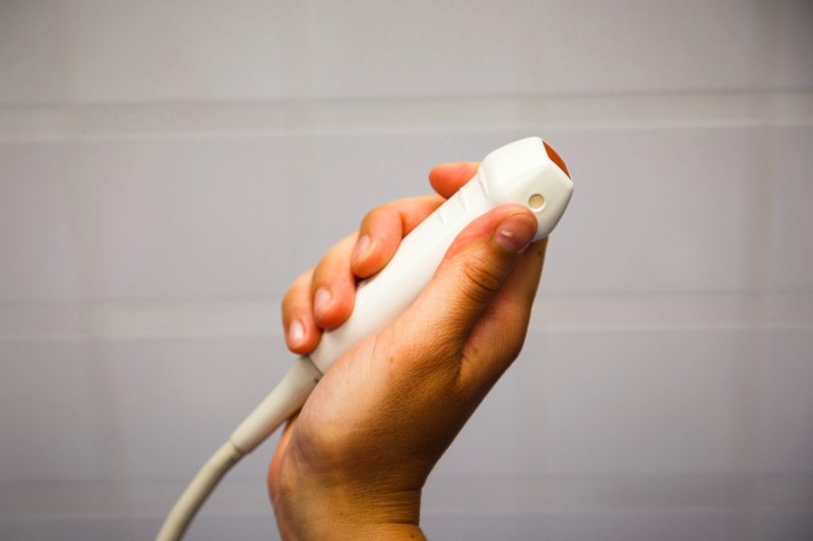
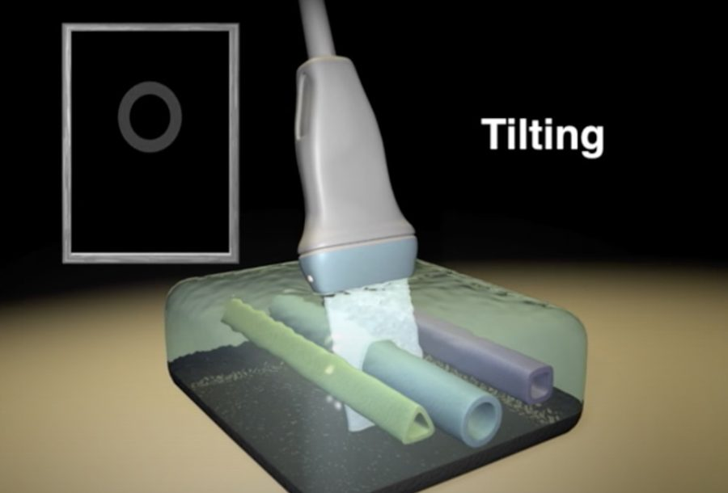

ESAVS Echocardiography · Chapter 03
探頭旋轉與傾斜的基本手法、常見取像問題的修正方式，以及機器上重要操作旋鈕的功能。
順時針或逆時針旋轉探頭，例如由長軸旋轉到短軸
沿探頭長軸方向傾斜纜線角度，可左右移動畫面中的構造位置
沿肋間往頭尾側滑動（換肋間），或往背側／胸骨側滑動
| 問題 | 修正方式 |
|---|---|
| 呼吸偽影明顯 | 探頭往前移一個肋間，並往後角度傾斜 |
| Hard way 旋轉到短軸時心臟跑到畫面邊緣 | 常見錯誤是旋轉時忘記持續「向後看」而讓纜線角度掉回去——探頭往前移，角度往後傾 |
| 畫面太陡（不夠水平） | 探頭離胸骨太近；保持同一肋間，改往背側移動 |
| 心臟太小 | 調整 Depth（深度）旋鈕 |
| 畫面太暗 | 加更多耦合劑；提高 Gain（增益） |
調整顯示深度
調整畫面明暗
對比度：低對比較柔和、高對比較銳利
心臟科建議窄扇形 → 提高影像更新率（frame rate）
放大感興趣區域，HR Zoom 為高解析度放大
Freeze 凍結畫面（仍可在記憶體中逐格捲動）；Store 儲存整段 Loop
切換 M-Mode、脈衝波、連續波、彩色都卜勒模式
移動取樣位置或選取測量點
開啟測量選單，進行各項腔室與都卜勒測量
Tissue Doppler Imaging（組織都卜勒）

